Instytut Dobrego Pasterza
na Warmii

Msze Święte
Niedziela:
godz. 10:30
Olsztyn, ul. Żniwna 7
Dni powszednie:
Według niedzielnych ogłoszeń
I czwartek miesiąca – godz. 18:00 + Godzina Święta
I piątek miesiąca – godz. 18:00
I sobota miesiąca – godz. 18:00
Spowiedź:
W niedziele i święta przed Mszą Świętą
w tygodniu przed wieczorną mszą
oraz do ustalenia indywidualnie
Ogłoszenia
Aktualności
► Wspierajmy się
Galeria

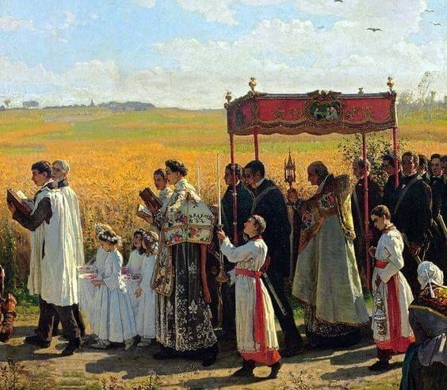
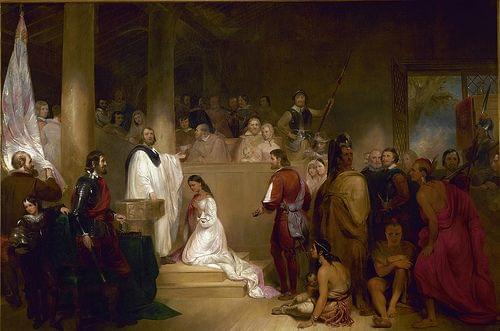
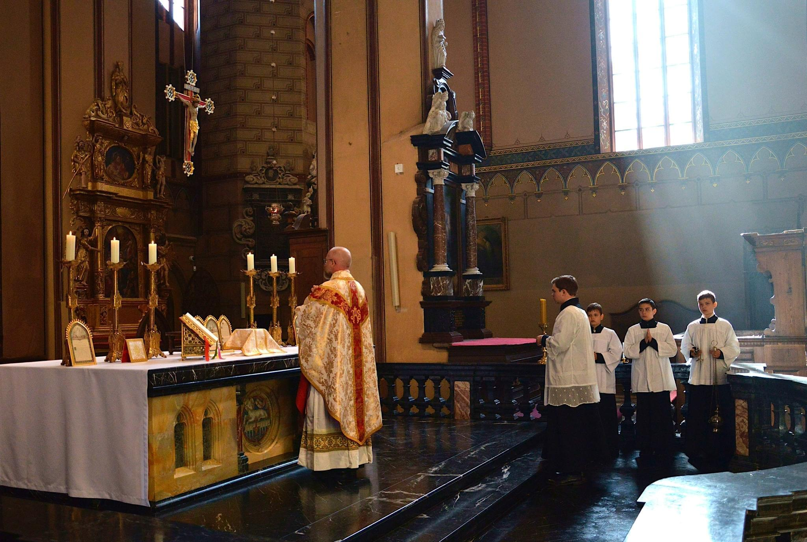
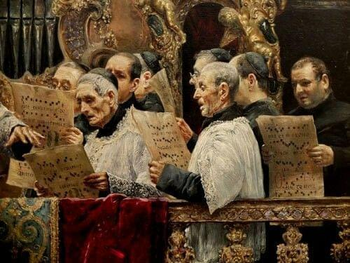
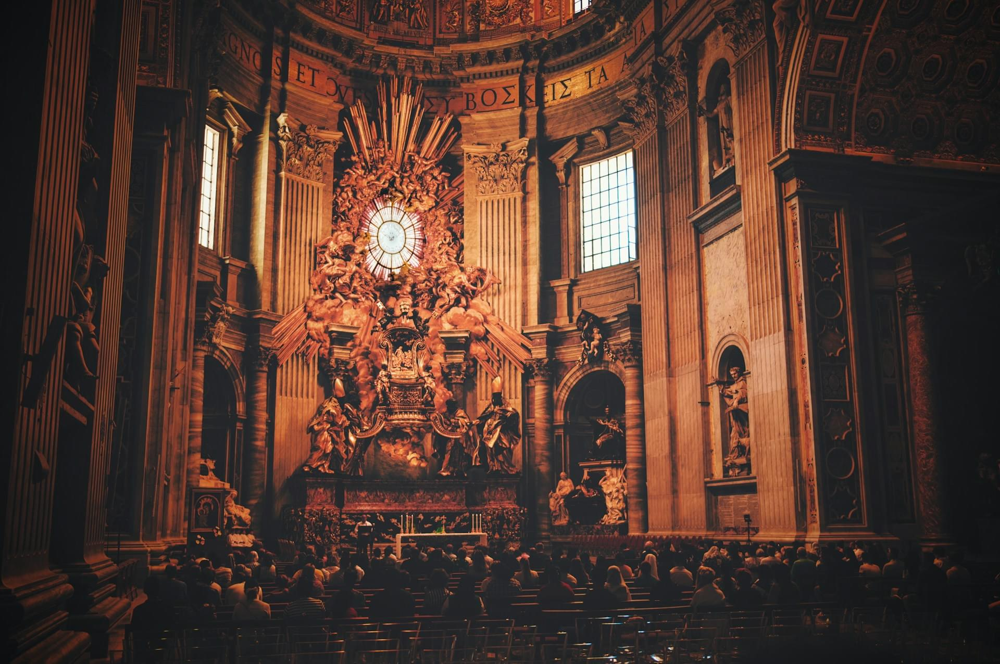
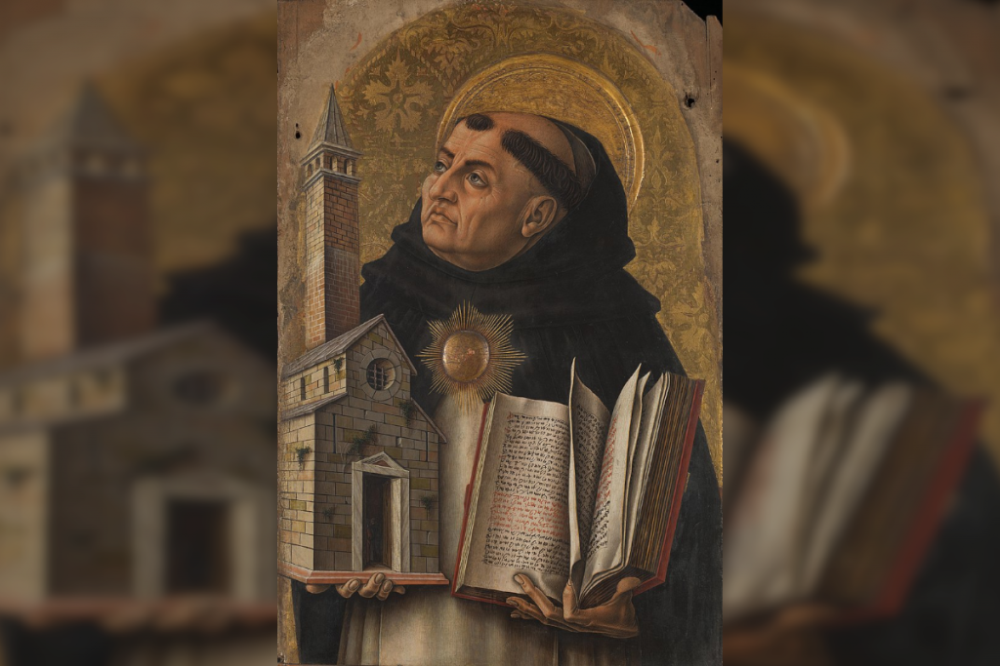
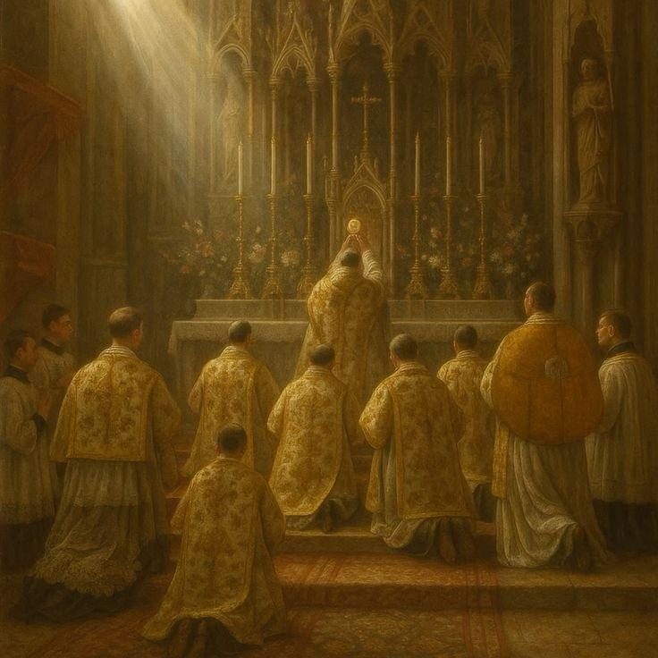
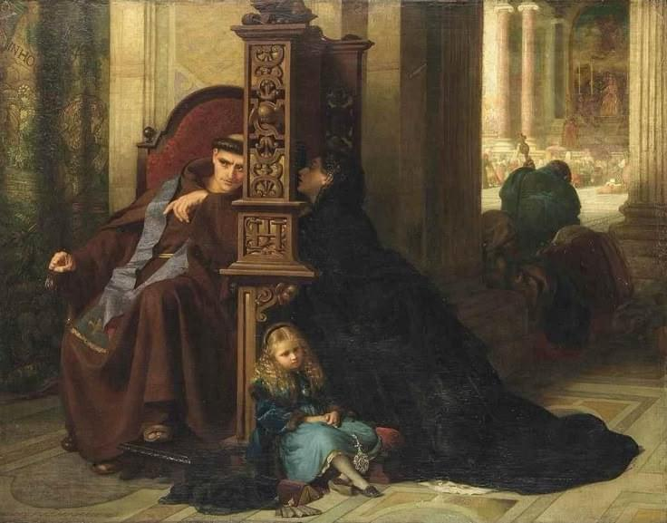
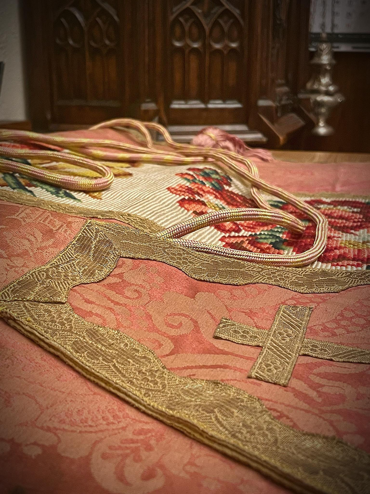
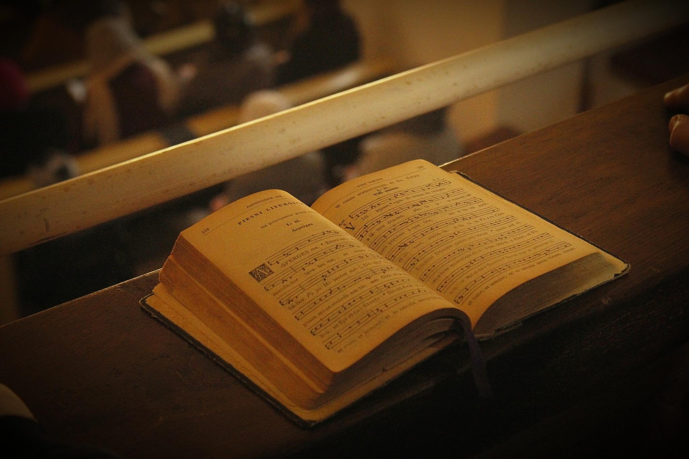
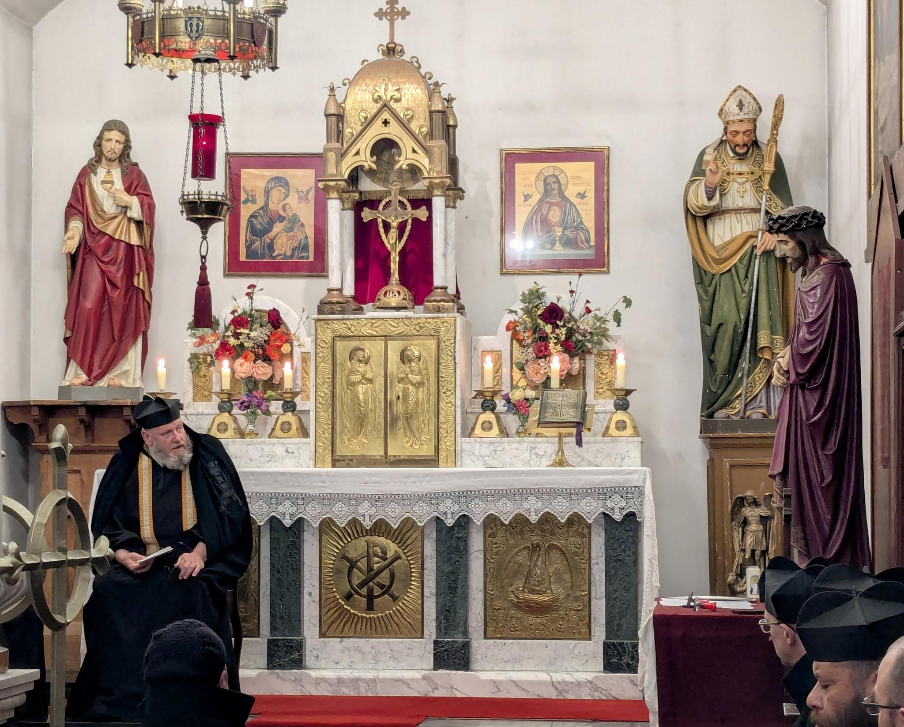
Wsparcie
PKO BP 76 1020 4900 0000 8202 3853 6835
Tytułem: darowizna na cele kultu religijnego
Informacje, jak odliczyć od podatku, dostępne na:
https://www.podatki.gov.pl/darowizny/darowizny-na-cele-kultu-religijnego-pit/